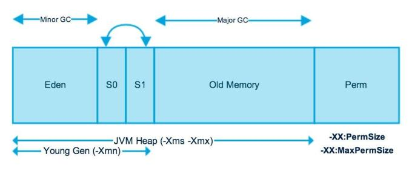

JDK是开发的环境依赖，JRE是程序运行环境依赖，JVM（Java虚拟机）是开发调试运行和程序运行的依赖，三者是套娃结构，JDK包含JRE，JRE包含JVM。
JRE（Java Runtime Environment），提供了一个60M基础类库lib/rt.jar，该库包括常用到的String、集合、网络、多线程等常用类。JRE还提供了不同平台下的JVM。生产环境下的Java程序的运行只需要编译后的字节码+JRE即可。JDK（Java Development Kit），比JRE多了一些位于lib文件夹下的开发类库，如dt.jar、tools.jar，JDK同时也提供了位于bin文件夹下的开发工具，如java.exe、javac.exe和jvisualvm.exe。JVM（Java Virtual Machine），是一个虚拟的计算机，不同平台有不同的实现方式，比如，Windows平台下是bin/server/jvm.dll，Linux系统下是lib/amd64/server/libjvm.so。
JVM
Java虚拟机是实现Java程序跨平台运行的一个抽象层，JVM中的Java解释器负责将字节码文件解释成为特定的机器码进行运行，是实现一次编译处处运行的关键。JVM内存区域分为：类装载器子系统（Class Loader Subsystem）、运行时数据区（ Runtime Data Areas）、和执行引擎（Execution Engine）。JVM内存区域如下：
- 类加载器子系统，负责加载程序中的类型（类和接口），并赋予唯一的名字。JVM的两种类装载器包括：启动类装载器和用户自定义类装载器，启动类装载器是JVM实现的，自定义类装载器是Java程序中ClassLoader的子类。
- 执行引擎，负责执行被加载类中包含的指令，它的执行技术有：解释、即时编译、自适应优化和芯片级直接执行。其中，解释属于第一代JVM，即时编译JIT属于第二代JVM，自适应优化是前两者的结合 ，芯片级直接执行用本地方法执行Java字节码。
自适应优化：开始对所有的代码都采取解释执行的方式，并监视代码执行情况，然后对那些经常调用的方法启动一个后台线程，将其编译为本地代码，并进行仔细优化。若方法不再频繁使用，则取消编译过的代码，仍对其进行解释执行，Sun的HotspotJVM采用这种技术。
Java与C编译的区别是：Java是运行时链接，而C是编译时链接。
运行时数据区
Java程序运行起来后，JVM就是个进程，其运行时数据区是给线程住的内存房子，房子分程序计数器（Program Counter (PC) Register）、虚拟机栈（Java Virtual Machine Stacks）、本地方法栈（Native Method Stacks）、堆（Heap）、方法区（Method Area）、运行时常量池（Run-Time Constant Pool）6个房间，前三个房间是JVM线程私有内存区，后三个是JVM线程共享内存区。方法区包括：变量、静态变量、 类信息(构造方法/接口定义) 和运行时常量池。其他堆内存包括：实例变量和数组。每个线程包含一个栈区，栈中只保存基础数据类型对象和自定义对象的引用(不是对象)。方法区是逻辑独立于堆，但实际包含在堆中，房间结构如下：
Java7之前，方法区位于永久代(PermGen)，永久代和堆相互隔离，永久代的大小在启动JVM时可以设置一个固定值，不可变；Java7中，字符串常量池从永久代移到堆中； Java8中，取消永久代，方法区存放于元空间(Metaspace)，元空间仍然与堆不相连。
Java 堆内存
堆房间是给对象住的，堆房间又被分为新生代和老年代两个小房间，新生代小房间又被隔成1个eden隔间和2个survivor隔间，堆房间总大小和各个隔间的比例是JVM调优的关键。JVM进程给Java对象所在的线程提供了运行空间。堆内存结构如下：

参考文献：